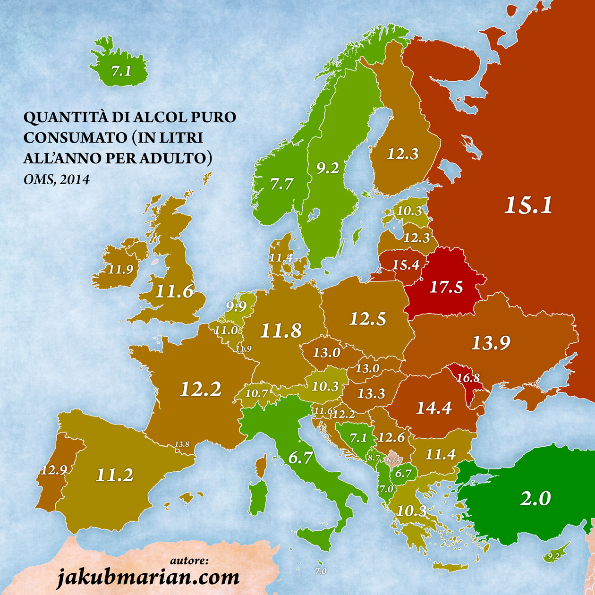
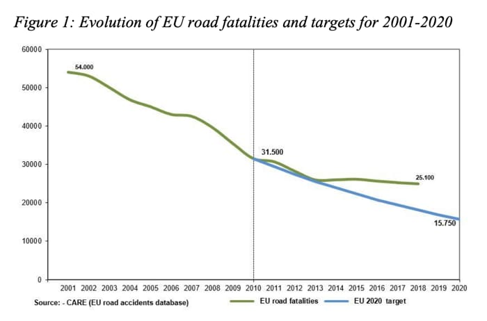

EFFETTI DELL'ALCOL SUL NOSTRO CORPO
A livello europeo, il consumo di alcol varia significativamente tra i diversi paesi. Nel 2016, il consumo medio pro capite di alcol tra gli adulti di età superiore ai 15 anni nei Paesi dell'UE, Norvegia e Svizzera è stato di 11,3 litri di alcol puro, con una media di oltre 170 grammi di alcol a settimana. Gli uomini hanno consumato in media 18,3 litri, mentre le donne 4,7 litri. Nei giovani adulti, l'alcol è stato responsabile di 1 morto ogni 4... questo accade principalmente perchè non hanno termianto lo sviluppo.
Ogni anno, oltre 10.000 persone muoiono in Europa in incidenti stradali alcol-correlati, rappresentando circa un quarto del totale degli incidenti mortali. Nonostante sia un numero spropositamente alto c'è da dire che, guardando il grafico affianco, possiamo federe un netto miglioramento rispetto agli anni precenti. Inoltre, riguardo ai giovani, le statistiche a livello europeo rilevano che quelli di età compresa tra i 18 e i 24 anni hanno il più elevato rischio di provocare o subire un incidente. Le stime più recenti riportano che il 25% degli incidenti per i giovani compresi tra i 18 e i 24 anni sono attribuibili ad alcol.
ù  